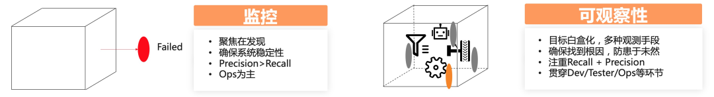
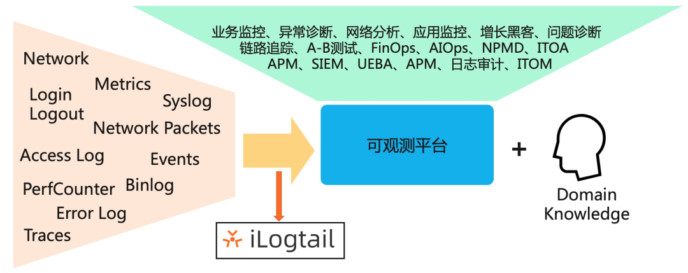
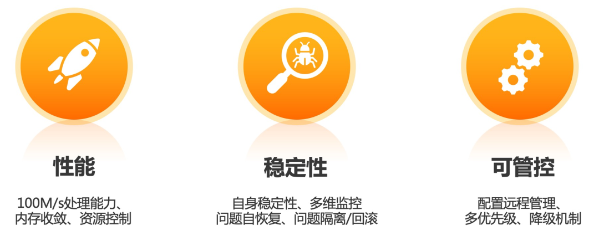
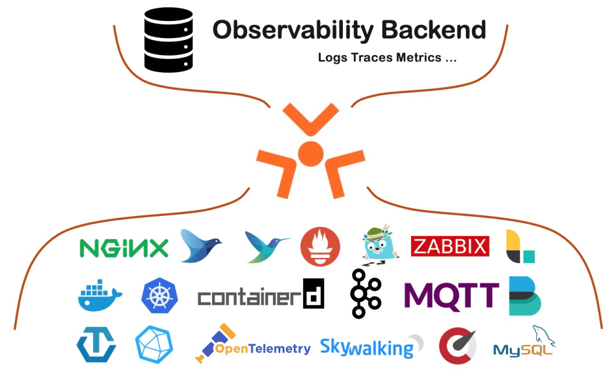
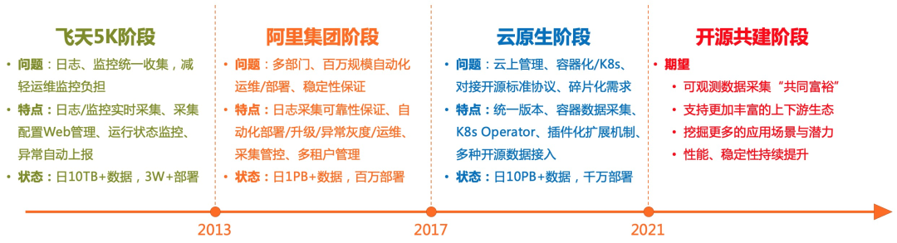
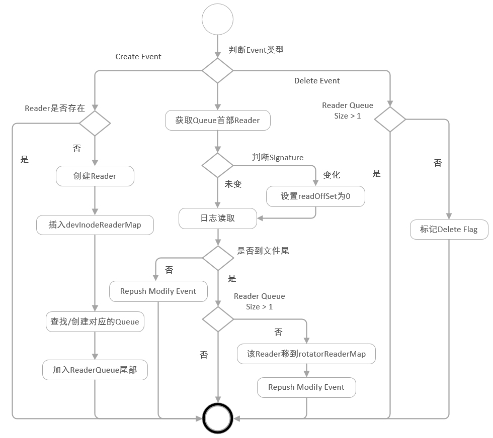
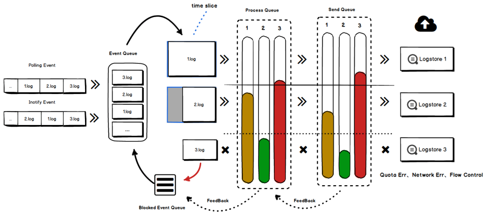
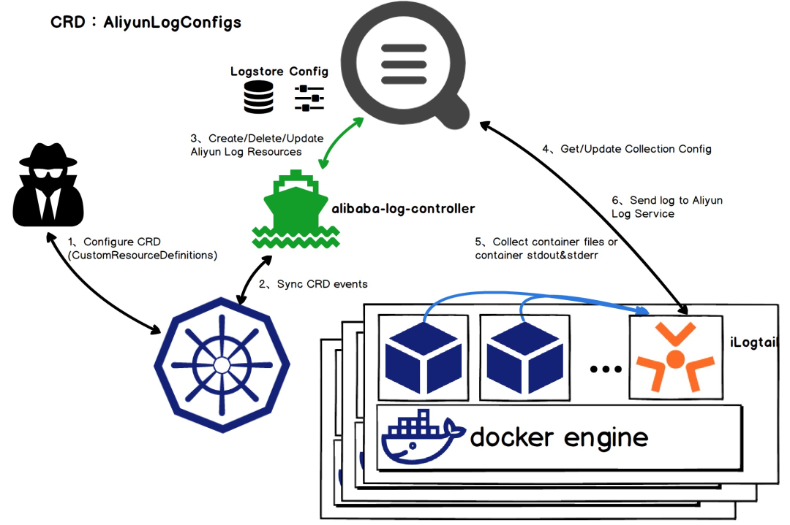
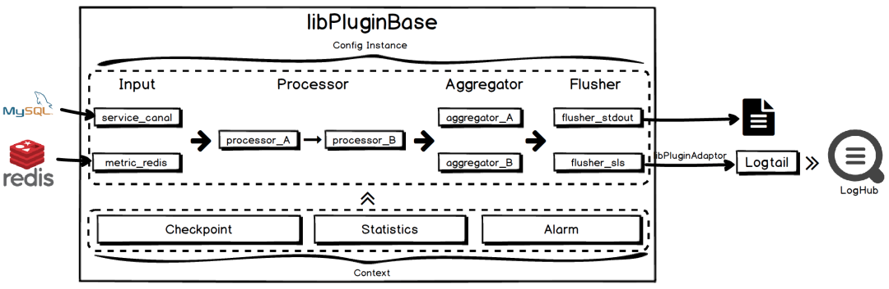

阿里开源可观测数据采集器iLogtail。作为阿里内部可观测数据采集的基础设施，iLogtail承载了阿里巴巴集团、蚂蚁的日志、监控、Trace、事件等多种可观测数据的采集工作。iLogtail运行在服务器、容器、K8s、嵌入式等多种环境，支持采集数百种可观测数据，目前已经有千万级的安装量，每天采集数十PB的可观测数据，广泛应用于线上监控、问题分析/定位、运营分析、安全分析等多种场景。
一 iLogtail与可观测性

可观测性并不是一个全新的概念，而是从IT系统中的监控、问题排查、稳定性建设、运营分析、BI、安全分析等逐渐演化而来，可观测性相比传统监控，最核心的演进是尽可能多的收集各类可观测数据，来实现目标的白盒化。而iLogtail的核心定位就是可观测数据的采集器，能够尽可能多的采集各类可观测性数据，助力可观测平台打造各种上层的应用场景。

二 阿里可观测数据采集的挑战

对于可观测数据的采集，有很多开源的Agent，例如Logstash、Filebeats、Fluentd、Collectd、Telegraf等。这些Agent的功能非常丰富，使用这些Agent的组合再进行一定的扩展，基本可以满足内部各类数据的采集需求。但由于一些性能、稳定性、管控能力等关键性的挑战无法满足，最终我们还是选择自研：
1、资源消耗：目前阿里内部有数百万的主机（物理机/虚拟机/容器），每天会产生几十PB的可观测数据，每1M的内存减少、每1M/s的性能提升对于我们的资源节省都是巨大的，带来的成本节约可能是数百万甚至上千万。目前众多开源Agent的设计更多的是偏重功能而非性能，基于现有开源Agent改造基本不可行。例如：
- 开源Agent普遍单核处理性能在2-10M/s左右，而我们希望有一个能达到100M/s的性能
- 在采集目标增加、数据量增加、采集延迟、服务端异常等情况下，开源Agent内存都会呈现爆炸式增长，而我们希望即使在各种环境下，内存也能处在较低的水位
- 开源Agent的资源消耗没办法控制，只能通过cgroup强行限制，最终的效果就是不断OOM，不断重启，数据一直采集不上来。而我们希望在指定一个CPU、内存、流量等资源限制后，Agent能一直在这个限制范围内正常工作
2、稳定性：稳定性是永恒的话题，数据采集的稳定性，除了保证数据本身采集的准确性外，还需要保证采集的Agent不能影响业务应用，否则带来的影响将是灾难性的。而稳定性建设，除了Agent自身的基础稳定性外，还有很多特性目前开源的Agent还没有提供：
- Agent自恢复：Agent遇到Critical的事件后能够自动恢复，并且提供多个维度的自恢复能力，例如进程自身、父子进程、守护进程
- 全局的多维度监控：能够从全局的角度监控各个不同版本、不同采集配置、不同压力、不同地域/网络等属性的Agent的稳定性问题
- 问题隔离：作为Agent，无论怎样出现问题，都需要尽可能的隔离问题，例如一个Agent上有多个采集配置，一个配置出问题，不能影响其他配置；Agent自身出现问题，不能影响机器上的应用进程的稳定性
- 回滚能力：版本更新和发布是再所难免的问题，在出现问题的时候如何快速回滚，而且保证出问题和回滚期间的数据采集还是at least once甚至是exactly once。
3、可管控：可观测数据的应用范围非常的广，几乎所有的业务、运维、BI、安全等部门都会要用，而一台机器上也会产生各种数据，同一台机器产生的数据上也会有多个部门的人要去使用，例如在2018年我们统计，平均一台虚拟机上有100多个不同类型的数据需要采集，设计10多个不同部门的人要去使用这些数据。除了这些之外，还会有其他很多企业级的特性需要支持，例如：
- 配置的远程管理：在大规模场景下，手工登录机器修改配置基本没有可行性，因此需要一套配置的图形化管理、远程存储、自动下发的机制，而且还要能够区分不同的应用、不同的Region、不同的归属方等信息。同时因为涉及到远程配置的动态加卸载，Agent还需要能够保证配置Reload期间数据不丢不重
- 采集配置优先级：当一台机器上有多个采集配置在运行时，如果遇到资源不足的情况，需要区分每个不同的配置优先级，资源优先供给高优先级的配置，同时还要确保低优先级的配置不被“饿死”
- 降级与恢复能力：在阿里，大促、秒杀是家常便饭，在这种波峰期间，可能有很多不重要的应用被降级，同样对应应用的数据也需要降级，降级后，在凌晨波峰过后，还需要有足够的Burst能力快速追齐数据
- 数据采集齐全度：监控、数据分析等场景都要求数据准确度，数据准确的前提是都能及时采集到服务端，但如何在计算前确定每台机器、每个文件的数据都采集到了对应的时间点，需要一套非常复杂的机制去计算

基于以上的背景和挑战下，我们从2013年开始，不断逐渐优化和改进iLogtail来解决性能、稳定性、可管控等问题，并经历了阿里多次双十一、双十二、春晚红包等项目的考验。目前iLogtail支持包括Logs、Traces、Metrics多种类型数据的统一收集，核心的特点主要如下：
支持多种Logs、Traces、Metrics数据采集，尤其对容器、Kubernetes环境支持非常友好
数据采集资源消耗极低，单核采集能力100M/s，相比同类可观测数据采集的Agent性能好5-20倍
高稳定性，在阿里巴巴以及数万阿里云客户生产中使用验证，部署量近千万，每天采集数十PB可观测数据
支持插件化扩展，可任意扩充数据采集、处理、聚合、发送模块
支持配置远程管理，支持以图形化、SDK、K8s Operator等方式进行配置管理，可轻松管理百万台机器的数据采集
支持自监控、流量控制、资源控制、主动告警、采集统计等多种高级管控特性
三 iLogtail发展历程
秉承着阿里人简单的特点，iLogtail的命名也非常简单，我们最开始期望的就是能够有一个统一去Tail日志的工具，所以就叫做Logtail，添加上“i”的原因主要当时使用了inotify的技术，能够让日志采集的延迟控制在毫秒级，因此最后叫做iLogtail。从2013年开始研发，iLogtail整个发展历程概括起来大致可以分为三个阶段，分别是飞天5K阶段、阿里集团阶段和云原生阶段。

1 飞天5K阶段
作为中国云计算领域的里程碑，2013年8月15日，阿里巴巴集团正式运营服务器规模达到5000（5K）的“飞天”集群，成为中国第一个独立研发拥有大规模通用计算平台的公司，也是世界上第一个对外提供5K云计算服务能力的公司。
飞天5K项目从2009年开始，从最开始的30台逐渐发展到5000，不断解决系统核心的问题，比如说规模、稳定性、运维、容灾等等。而iLogtail在这一阶段诞生，最开始就是要解决5000台机器的监控、问题分析、定位的工作（如今的词语叫做“可观测性”）。从30到5000的跃升中，对于可观测问题有着诸多的挑战，包括单机瓶颈、问题复杂度、排查便捷性、管理复杂度等。
| 5K之前 | 5K（2013年） | |
|---|---|---|
| 监控指标 | 通过单机飞天神农来汇聚系统的状态。只能支持1000台内的指标汇聚。 | 数据在本地产生，由iLogtail统一收集到SLS服务端，包括：指标数据：Metrics（神农指标）日志数据：Logs（飞天日志、系统日志等）链路数据：Traces（飞天Trace）SLS根据日志处理需求提供三类处理：实时指标计算与展示（分布式版神农）索引数据提供实时查询（Logs、Traces）数据通过导入到ODPS（如今叫做MaxCompute）离线分析 |
| 日志查询 | 登录机器grep，或者用pssh工具批量grep。速度慢，日志可能被清理，影响机器性能，存在误操作/安全风险。 | |
| 链路排查 | 只能通过一个JobID在全部机器grep。 | |
| 离线分析 | 利用脚本rsync每台机器上的日志，导入到离线系统进行计算。性能差、运维管理复杂。 |
在5K阶段，iLogtail本质上解决的是从单机、小规模集群到大规模的运维监控挑战，这一阶段iLogtail主要的特点有：
- 功能：实时日志、监控采集，日志抓取延迟毫秒级
- 性能：单核处理能力10M/s，5000台集群平均资源占用0.5%CPU核
- 可靠性：自动监听新文件、新文件夹，支持文件轮转，处理网络中断
- 管理：远程Web管理，配置文件自动下发
- 运维：加入集团yum源，运行状态监控，异常自动上报
- 规模：3W+部署规模，上千采集配置项，日10TB数据
2 阿里集团阶段
iLogtail在阿里云飞天5K项目中的应用解决了日志、监控统一收集的问题，而当时阿里巴巴集团、蚂蚁等还缺少一套统一、可靠的日志采集系统，因此我们开始推动iLogtail作为集团、蚂蚁的日志采集基础设施。从5K这种相对独立的项目到全集团应用，不是简单复制的问题，而我们要面对的是更多的部署量、更高的要求以及更多的部门：
- 百万规模运维问题：此时整个阿里、蚂蚁的物理机、虚拟机超过百万台，我们希望只用1/3的人力就可以运维管理百万规模的Logtail
- 更高的稳定性：iLogtail最开始采集的数据主要用于问题排查，集团广泛的应用场景对于日志可靠性要求越来越高，例如计费计量数据、交易数据，而且还需要满足双十一、双十二等超大数据流量的压力考验。
- 多部门、团队：从服务5K团队到近千个团队，会有不同的团队使用不同的iLogtail，而一个iLogtail也会被多个不同的团队使用，在租户隔离上对iLogtail是一个新的挑战。
经过几年时间和阿里集团、蚂蚁同学的合作打磨，iLogtail在多租户、稳定性等方面取得了非常大的进步，这一阶段iLogtail主要的特点有：
功能：支持更多的日志格式，例如正则、分隔符、JSON等，支持多种日志编码方式，支持数据过滤、脱敏等高级处理
性能：极简模式下提升到单核100M/s，正则、分隔符、JSON等方式20M/s+
可靠性：采集可靠性支持Polling、轮转队列顺序保证、日志清理保护、CheckPoint增强；进程可靠性增加Critical自恢复、Crash自动上报、多级守护

日志保序采集方案原理（细节可参考《iLogtail技术分享(一) : Polling + Inotify 组合下的日志保序采集方案》）
- 多租户：支持全流程多租户隔离、多级高低水位队列、采集优先级、配置级/进程级流量控制、临时降级机制

多租户隔离整体流程（细节可参考《iLogtail技术分享(二)：多租户隔离技术+双十一实战效果》）
运维：基于集团StarAgent自动安装与守护，异常主动通知，提供多种问题自查工具
规模：百万+部署规模，千级别内部租户，10万+采集配置，日采集PB级数据
3 云原生阶段
随着阿里所有IT基础设施全面云化，以及iLogtail所属产品SLS（日志服务）正式在阿里云上商业化，iLogtail开始全面拥抱云原生。从阿里内部商业化并对外部各行各业的公司提供服务，对于iLogtail的挑战的重心已经不是性能和可靠性，而是如何适应云原生（容器化、K8s，适应云上环境）、如何兼容开源协议、如何去处理碎片化需求。这一阶段是iLogtail发展最快的时期，经历了非常多重要的变革：
统一版本：iLogtail最开始的版本还是基于GCC4.1.2编译，代码还依赖飞天基座，为了能适用更多的环境，iLogtail进行了全版本的重构，基于一套代码实现Windows/Linux、X86/Arm、服务器/嵌入式等多种环境的编译发版
全面支持容器化、K8s：除了支持容器、K8s环境的日志、监控采集外，对于配置管理也进行了升级，支持通过Operator的方式进行扩展，只需要配置一个AliyunLogConfig的K8s自定义资源就可以实现日志、监控的采集

iLogtail Kubernetes日志采集原理（细节可参考《Kubernetes日志采集原理剖析》）
- 插件化扩展：iLogtail增加插件系统，可自由扩展Input、Processor、Aggregator、Flusher插件用以实现各类自定义的功能

iLogtail插件系统整体流程（细节可参考《iLogtail插件系统简介》）
- 规模：千万部署规模，数万内外部客户，百万+采集配置项，日采集数十PB数据
四 开源背景与期待
闭源自建的软件永远无法紧跟时代潮流，尤其在当今云原生的时代，我们坚信开源才是iLogtail最优的发展策略，也是释放其最大价值的方法。iLogtail作为可观测领域最基础的软件，我们将之开源，也希望能够和开源社区一起共建，持续优化，争取成为世界一流的可观测数据采集器。对于未来iLogail的发展，我们期待：
- iLogtail在性能和资源占用上相比其他开源采集软件具备一定优势，相比开源软件，在千万部署规模、日数十PB数据的规模性下为我们减少了100TB的内存和每年1亿的CPU核小时数。我们也希望这款采集软件可以为更多的企业带来资源效率的提升，实现可观测数据采集的“共同富裕”。
- 目前iLogtail还只是在阿里内部以及很小一部分云上企业（虽然有几万家，但是面对全球千万的企业，这个数字还很小），面对的场景相对还较少，我们希望有更多不同行业、不同特色的公司可以使用iLogtail并对其提出更多的数据源、处理、输出目标的需求，丰富iLogtail支持的上下游生态。
- 性能、稳定性是iLogtail的最基本追求，我们也希望能够通过开源社区，吸引更多优秀的开发者，一起共建iLogtail，持续提升这款可观测数据采集器的性能和稳定性。
链接汇总：
1 | 1）阿里正式开源可观测数据采集器iLogtail：https://github.com/alibaba/ilogtail |

...
...
Copyright 2021 sunfy.top ALL Rights Reserved